Design Systems · Liberty Mutual & Safeco
Building a design system across global insurance products
Built from zero to one as a team of two, then merged with a second system that had been running in parallel for a year and a half, becoming infrastructure other teams built on across agent, employee, and customer products in the U.S. and globally.


One system, documented and shipped: color, components, and code side by side, built to be used, not just admired.
The problem
Liberty Mutual and Safeco operated without a shared design foundation. The result was fragmented experiences that undermined brand consistency and eroded user trust at the exact touchpoints where an insurance company most needs to feel professional.
How fragmented? When I joined, even the true source of the Safeco logo and the correct brand font were unknown.
Act 1
Starting from scratch
I partnered with one other designer to apply design thinking to our own colleagues' pain points, starting with the small set of base components everything else would rely on. The early insight that shaped everything: what we'd assumed were three separate systems, Agent, Consumer, and Employee, turned out to be one system waiting to be unified.
We built a site that brought the system to life: a sandbox, React components, documentation, accessibility guidelines, and ready-to-use code snippets.
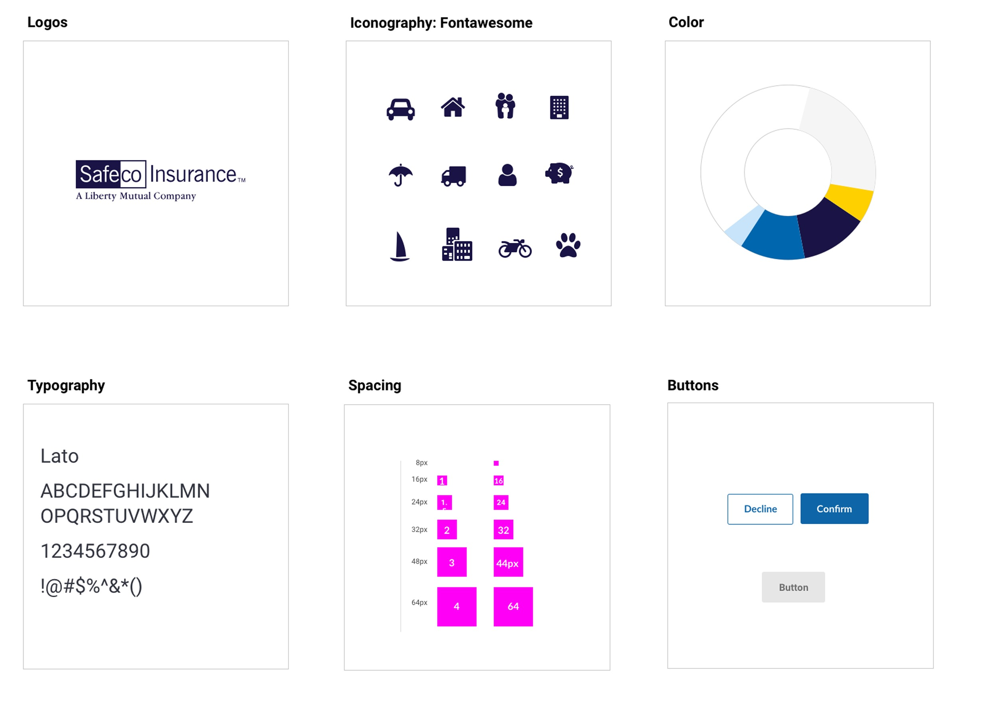
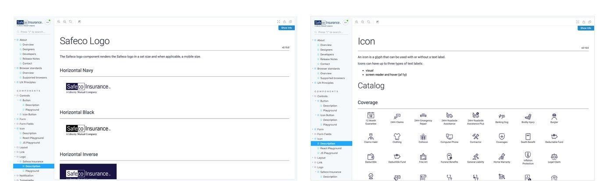
Brand fundamentals and documentation, defined together: logo lockups, Fontawesome iconography, the color story, Lato typography, spacing scale, and button states, down to usage rules and a full icon catalog, the kind of specificity that made "production-ready" mean something.
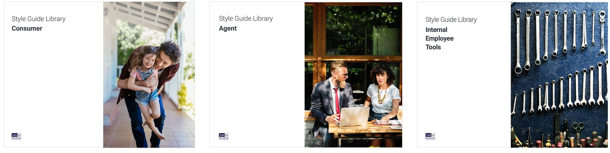
Style guides tailored to each audience: consumer, agent, and internal employee tools, sharing one underlying system.
Making it scalable, not just usable
Components weren't enough; the system needed rules for how it would grow and stay healthy. I aligned the team on a clear intake process and a shared definition of done, so every request was triaged consistently and every decision could be explained.
We documented two paths: an All Inclusive Path for complex components needing full design, research, and QA, and a Fast Lane for simple changes. A decision tree answered the question every design system team faces: is a new pattern actually necessary, or can we amend what exists? This governance layer is what let the system scale beyond the core team.
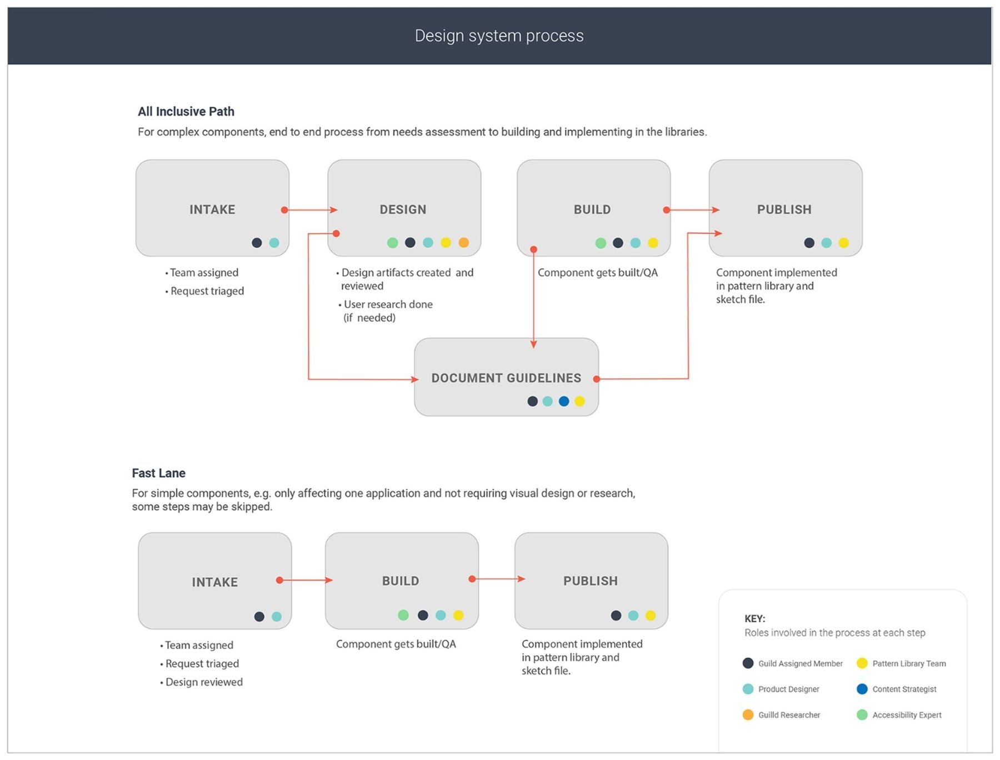
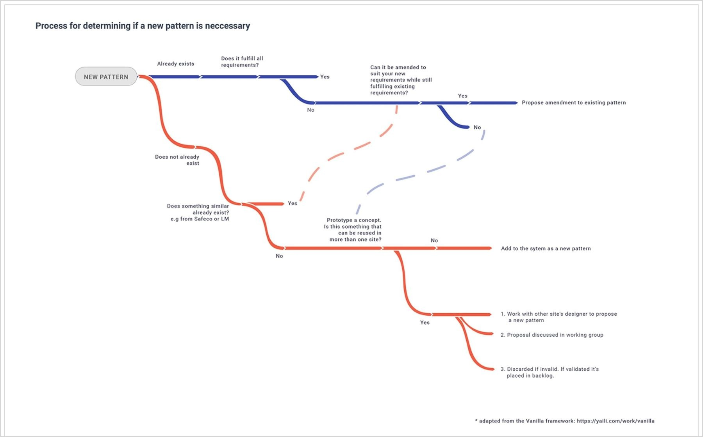
The governance layer: intake to publish for complex components, a fast lane for simple ones, and a decision tree so a new pattern only got added when nothing existing would do.
Act 2
Merging two systems into one
For 18 months, Safeco and Liberty Mutual ran parallel systems, meeting periodically but operating independently, until an audit revealed how much overlap existed and how much there was to gain by combining forces. We brought both teams into a workshop to weigh what to keep, retire, and rebuild. The team grew from two to five, and the result was a single unified system spanning agent-, employee-, and customer-facing products across U.S. and global markets.
In parallel, I joined a cross-functional team shaping updated brand guidelines for Safeco.com, pressure-testing concepts with key stakeholders before rolling the new brand into the merged system.
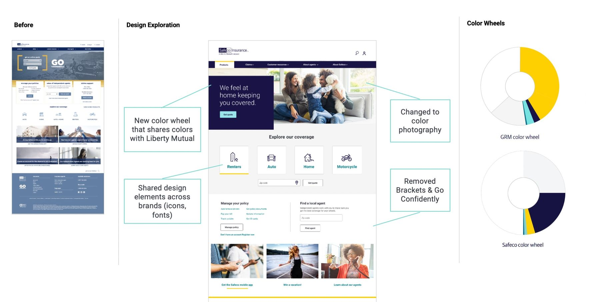
Before and after: a new color wheel shared with Liberty Mutual, color photography in place of stock imagery, and dated brackets and taglines retired.
Making accessibility part of the build process
As the system matured, we brought in an accessibility expert to review components and built a simple checklist into handoff and QA. It kept the team educated and made "production-ready" mean something, not just a box checked at the end.
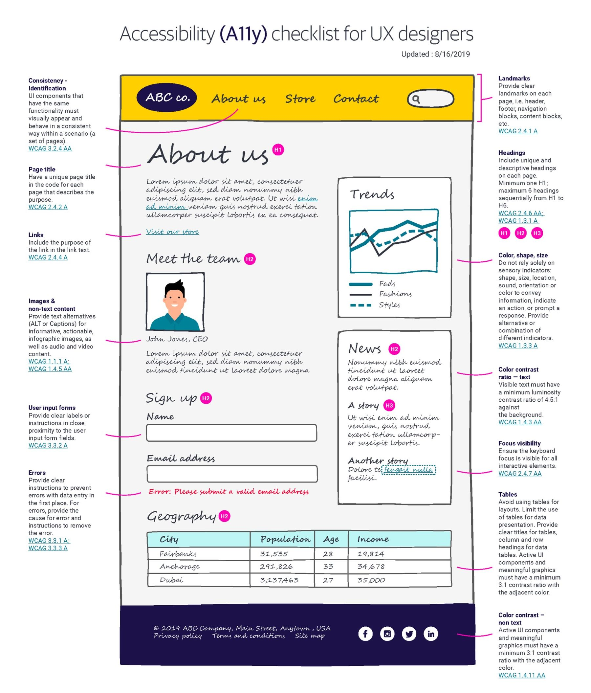
The accessibility checklist built into handoff and QA, mapped to WCAG criteria so it held up beyond one reviewer's memory.
Act 3
Impact
The system stopped being a project and became infrastructure other teams built on, and the results showed up in their numbers: a 97% NPS lift on Manage My Account and $161M in new business revenue on the Independent Agent Book Transfer tool. Quarterly surveys tracked the system's own health: component satisfaction, code adoption, and guidelines usage all climbed steadily.
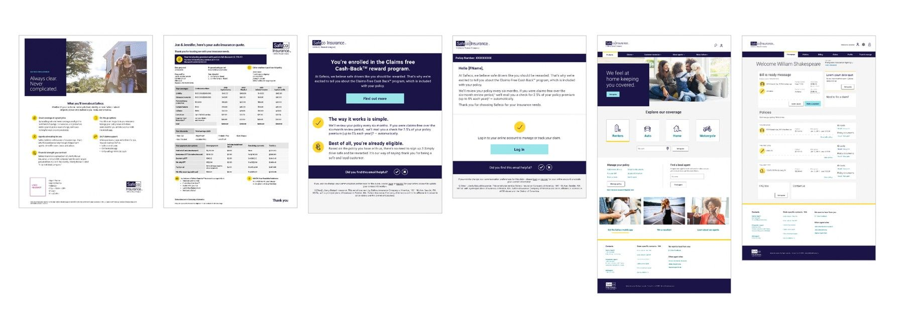
The "I just bought a policy" journey: marketing one-pager, quote document, claims cash-back enrollment email, account login, and the customer-facing site, all built from the same components.
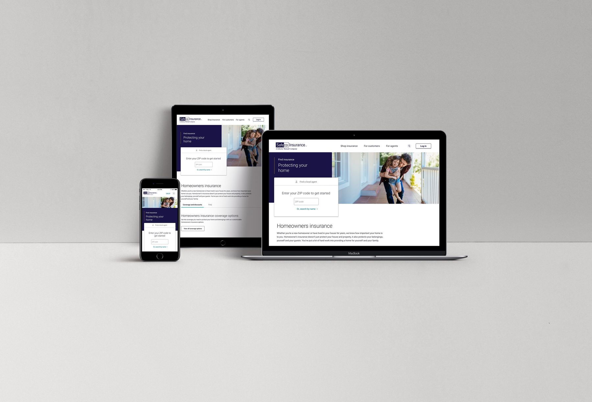
Consistent across breakpoints: the same components, the same rules, from phone to desktop.
Before
After
Manage My Account, before and after: the page behind the 97% NPS lift below.
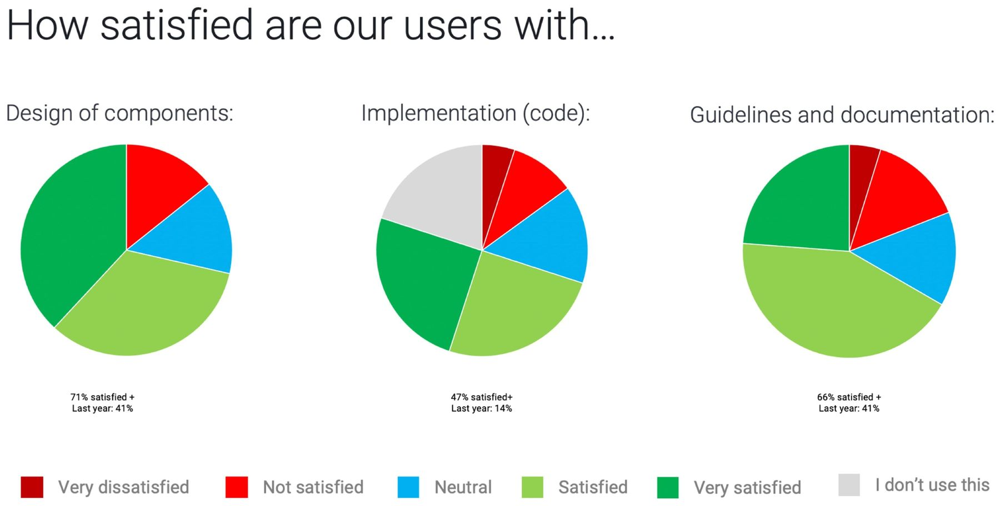
Quarterly Design Systems Survey: 41% → 71% component satisfaction, 14% → 47% code adoption, 41% → 66% guidelines usage.
The system today
The documentation site carries that same specificity all the way through: a welcome page and roadmap, full color and accessibility guidance, and component pages with usage rules, live code snippets, and a sign-off checklist before anything ships.
Design tokens came later, formalized in the system's final stretch, not long before I left. That work translated the color, type, and spacing decisions from the early style guide into token architecture the dev team could consume directly.
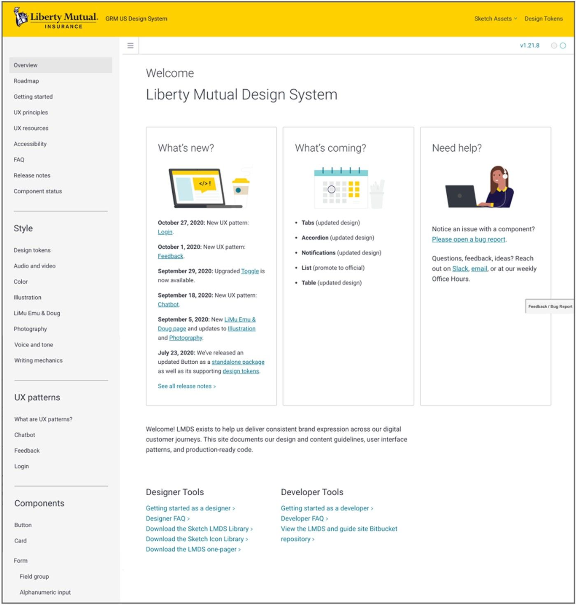
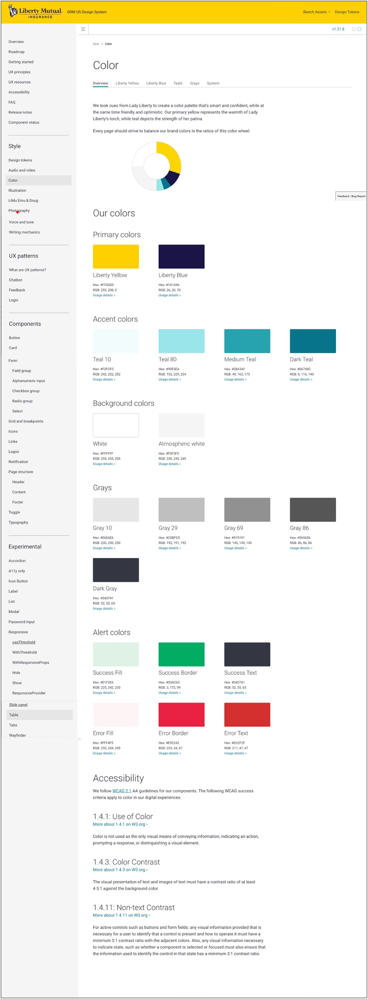
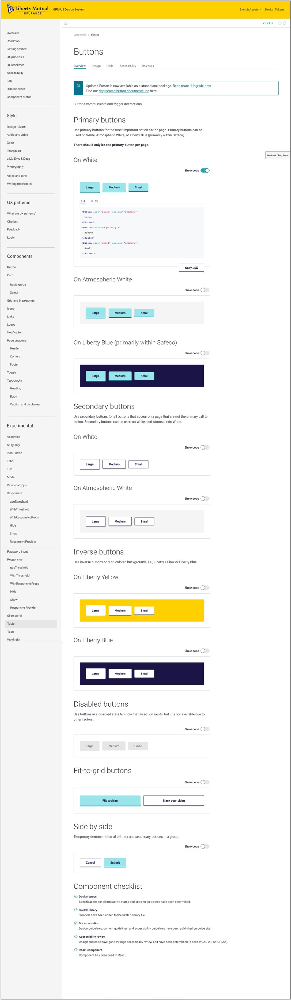
Overview, Color, and Buttons: three pages of one documentation site, each carried to the same level of detail.
Outcomes
The system didn't just create consistency, it became infrastructure other teams built on, and the results showed up in their numbers.
"We built a portion of our app before and it took 9 months. With the GRM Design System we were able to build out that portion in 4 weeks."
— Liberty Mutual Sales Flow, developer
What I'd take from this
Running parallel systems for 18 months was a good exercise. Both teams sharpened their thinking independently, and the workshop where we merged was stronger for it. But if I did it again, I'd push for consolidating the teams much earlier. The audit that triggered the merger didn't reveal new overlap, it revealed overlap that had existed the whole time, and we paid for it in duplicated components, parallel decisions, and patterns that later had to be reconciled.
The lesson I carry forward: when two teams are solving the same problem side by side, the question isn't whether to combine forces, it's how much it costs to wait.